Lecture 8: Introduction to Connectivity#
Warmup#
Question 12
Consider the following graphs.

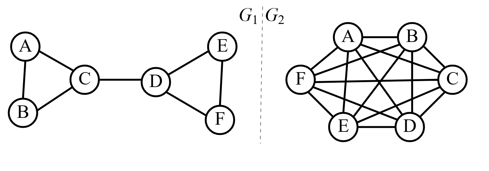
You want to break up these graphs into 2 connected pieces. You’ll use edge-cutting scissors. Being lazy, you want to use as little effort as possible. Which edge(s) would you cut in \(G_1\)? In G_2?
You want to map out every path from \(A\) to \(F\). Which edge(s) are visited most often in \(G_1\)? In $G_2?
Answer
Let us consider \(G_1\):

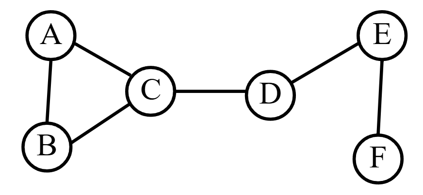
We can split this graph into two pieces in many different ways. For example, consider removing cutting the edges between \(C\) with \(A\) and \(B\):

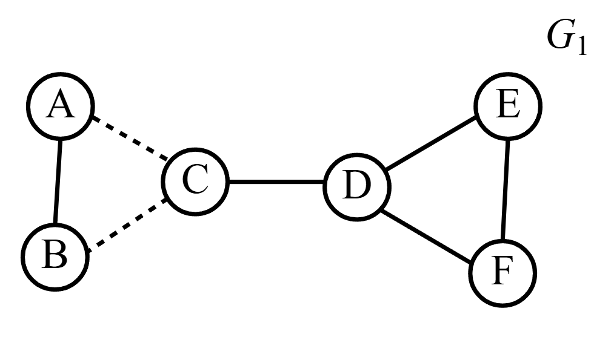
Indeed, if we remove these edges, there will be two disconnected pieces: \(A\) and \(B\) then \(C,D,E,\) and \(F\). But, we can actually use less effort with our edge-cutting scissors by cutting the middle edge:

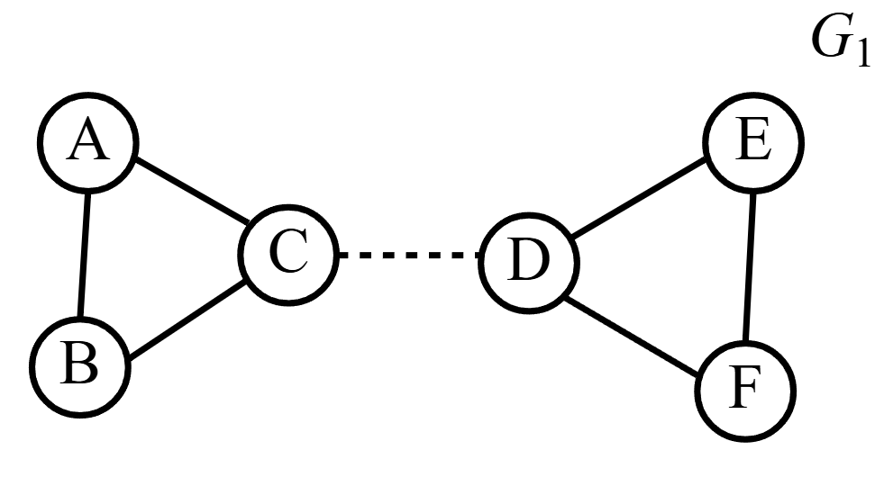
Notice that we have two disconnected pieces by removing just one edge! Compare this then with \(G_2\):

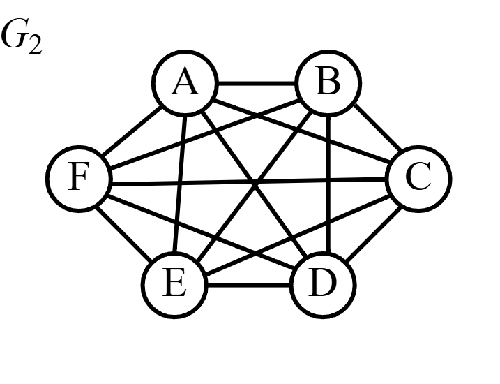
Clearly, removing one edge will not be enough to disconnect this graph. With some trial and error/guess and check you might find that the least amount of edges you can remove is 5. For example, if I remove any egde with \(A\) in it, I end up disconnecting the graph:

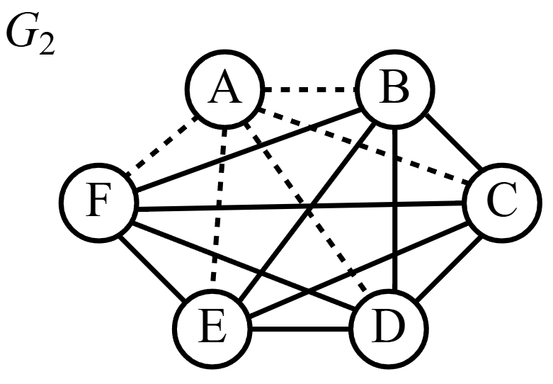
In some sense, it is easier to disconnect \(G_1\) than \(G_2\). Is \(G_1\) some how less connected than \(G_2\)?
Consider \(G_1\) again.

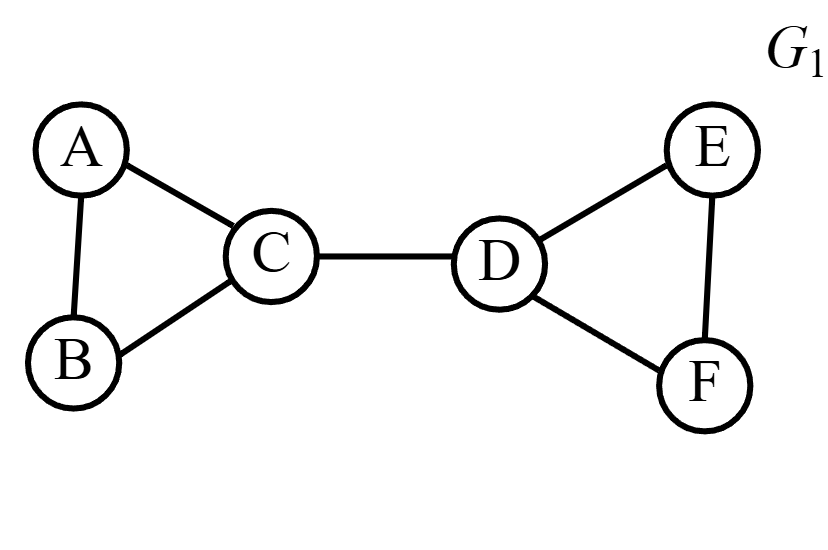
Note that any path you would take from \(A\) to \(F\), you must traverse the edge between \(C\) and \(D\). For example, take the path

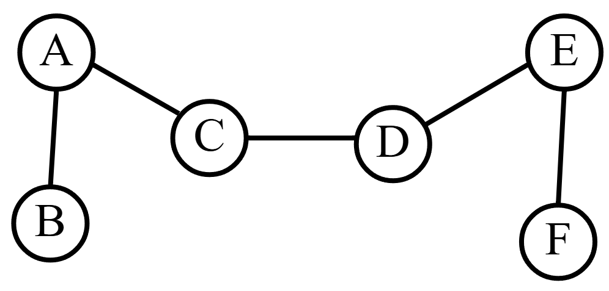
or maybe the path

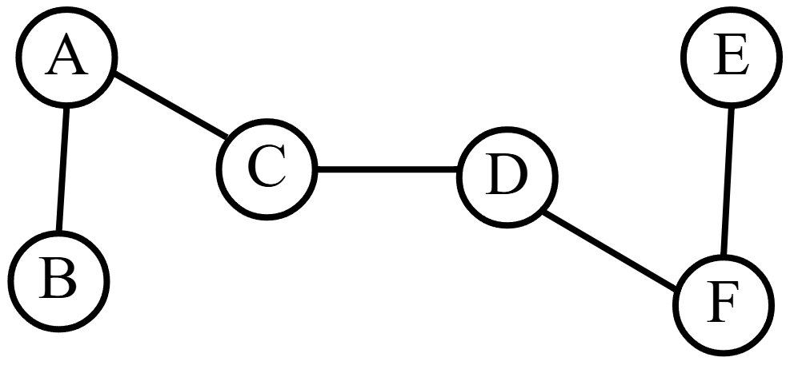
No matter what, the edge \(\{C, D\}\) is present! Now, consider \(G_2\):
Taking a path from \(A\) to \(F\) definitely does not pass through one edge every time. In some sense, \(G_1\) is more bottlenecked than \(G_2\). Is \(G_1\) somehow less connected than \(G_2\)?
Secret question 3 is what is the difference between small edge-cuts and bottlenecking? What we will prove later is Menger’s Theorem and the Min-Max Theorem which answers this question: they are essentially the same thing.
Connectivity#
Definition 28 (Edge-Connectivity)
The edge-connectivity of a graph \(G\), \(\epsilon(G)\), is the minimum number of edges we need to remove to disconnect the graph. Equivalently, if \(G=(V,E)\) is a graph, then \(\epsilon(G)\) is the size of smallest set \(F\subseteq E\) such that \(G-E\) is disconnected.
For example, from our warmup problem, \(G_1\) has \(\epsilon(G)=1\) since removing \(\{C,D\}\) disconnected the graph.
Remarks:
If \(\epsilon(G)=0\), then \(G\) is disconnected.
If \(\epsilon(G)>0\), then \(G\) is connected.
By convention, \(\epsilon(K_1)=0\) (i.e. the graph with one vertex and no edges is disconnected).
If \(\epsilon(G)=1\), the removing some edge will disconnect the graph.
Question 13 (To Ponder)
Draw me a graph where every edge disconnects the graph upon removal.
Answer
Here is an example:

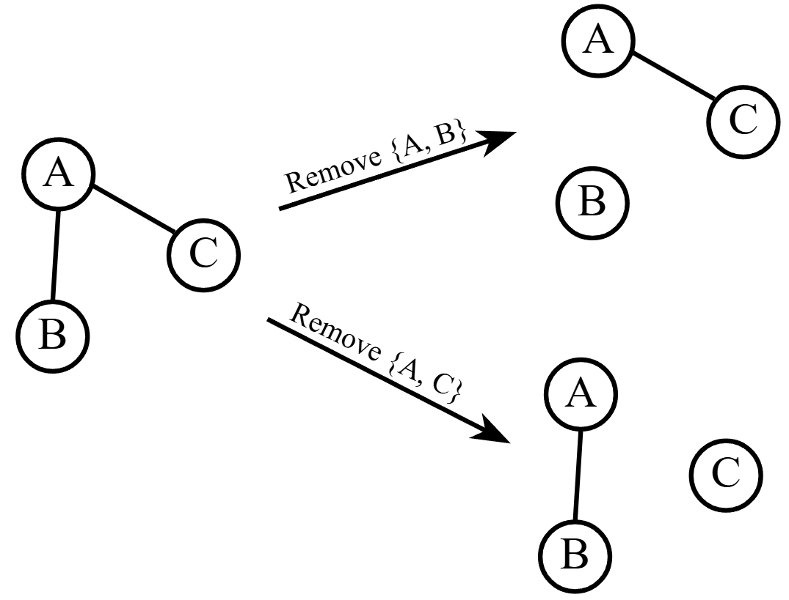
These types of objects are called trees. We will discuss them soon.
Theorem 12
For a graph \(G\), \(\delta(G)\geq \epsilon(G)\).
Proof. Let \(G=(V,E)\) be some graph with \(v_0\in V\) obtaining the minimum degree of \(G\). That is, the degree of \(v_0\) is \(\delta(G)\), \(d_{G}(v_0)=\delta(G)\). Let \(E_{v_0}\) be the set of edges that contain \(v_0\), \(E_{v_0}=\{\{v_0,u\}|\{v_0,u\}\in E\}\). Note that \(|E_{v_0}|=\delta(G)\). Also note that removing these edges will leave \(v_0\) with no edges and \(G\) will be disconnected. So, to disconnect \(G\), will at most have to remove these edges (i.e. \(|E_{v_0}|\geq \epsilon(G)\) which means \(\delta(G)\geq \epsilon(G)\)).
Definition 29 (Cut-Edge/Bridge)
An edge that disconnects a graph is called a cut-edge or bridge. Equivalently, \(\{u,v\}\) in some connected graph \(G\) is a cut-edge if \(G-\{u,v\}\) is a disconnected graph.
For example, consider the graph
By removing either \(\{C,D\}\) or \(\{D,E\}\) or \(\{E,F\}\), we disconnect the graph. These edges are called cut-edges.
Consider what a graph with a cut-edge looks like. There is one edge that disconnects the graph into two pieces. Vaguely, they look something like

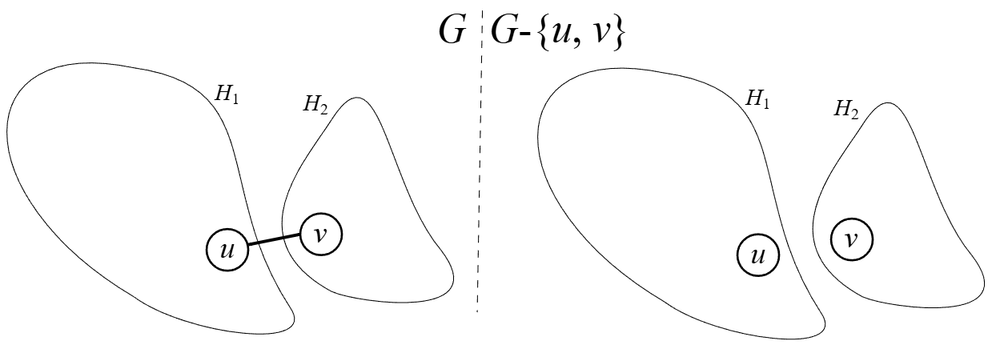
This intuition leads to the proof of the following theorem.
Theorem 13
Let \(G\) be a connected graph. Let \(\{u,v\}\) be some cut-edge of \(G\). Then, \(P=(\{u,v\})\) is the only path from \(u\) to \(v\).
Proof. Let \(G=(V,E)\) be some connected graph with a cut-edge \(\{u,v\}\in E\). Consider removing \(\{u,v\}\) to obtain \(G-\{u,v\}\). Without loss of generality, assume \(H_1\) and \(H_2\) are the resulting pieces of \(G-\{u,v\}\) and that \(u\in H_1\).
Since \(G\) is connected and \(G-\{u,v\}\) is not, there is a path \(P=(\{u, x_1\}, \{x_1,x_2\}, \dots, \{x_{m-1}, x_m\})\) that is no longer a path in \(G-\{u,v\}\). So, \(\{u,v\}\) must be in \(P\). But, \(P\) is a path. So, each vertex is distinct. That means \(\{u,x_1\}=\{u,v\}\) otherwise \(v\) would be repeated on \(P\) wouldn’t be a path! Now, when we remove \(\{u,v\}\), \(P\) becomes \(P'=(\{x_1=v,x_2\},\{x_2,x_3\},\dots, \{x_{m-1},x_m\})\).
If \(x_m\in H_1\), then the graph did not end up being disconnected! So, \(\{u,v\}\) wouldn’t be a cut-edge.
If \(x_m\in H_2\), then \(v\) has a path to all vertices in \(H_2\). So, \(v\in H_2\).
So, \(u\in H_1\) and \(v\in H_2\). Every path must contain \(\{u,v\}\). Since each path has distinct vertices, they must start with \(\{u,v\}\). This means the path must be \(\{u,v\}\). Therefore, \(P=(\{u,v\})\) must be the only path from \(u\) to \(v\).